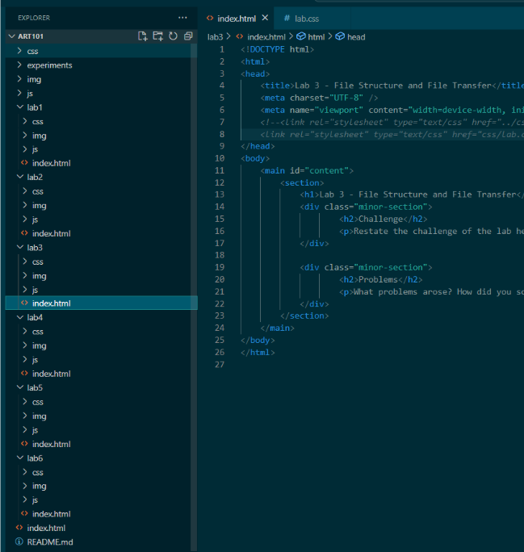
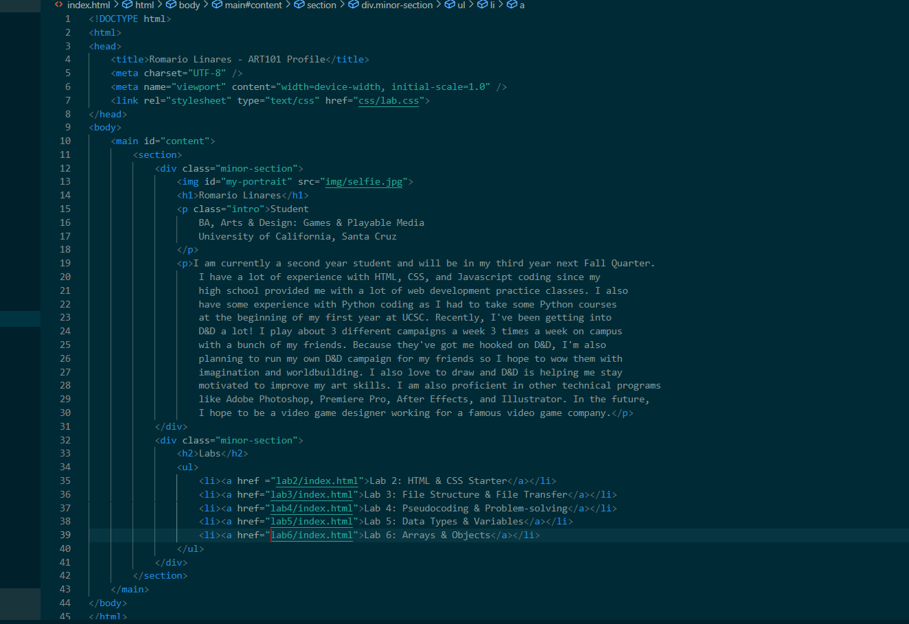
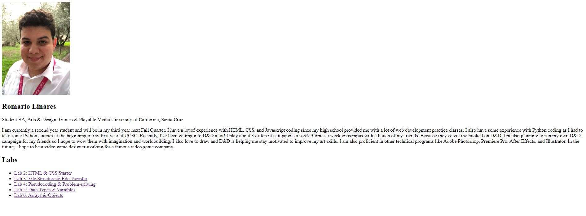
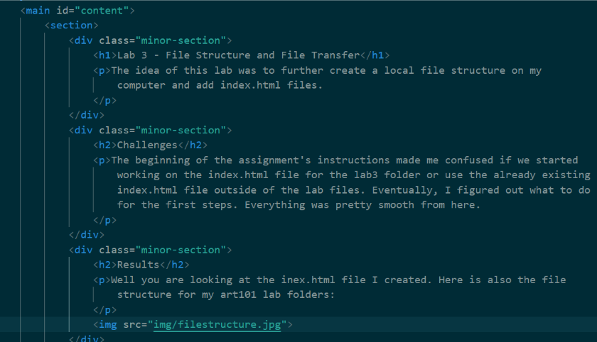

Lab 3 - File Structure and File Transfer
The idea of this lab was to further create a local file structure on my computer and add index.html files.
Challenges
The beginning of the assignment's instructions made me confused if we started working on the index.html file for the lab3 folder or use the already existing index.html file outside of the lab files. Eventually, I figured out what to do for the first steps. Everything was pretty smooth from here.
Results
Well you are looking at the inex.html file I created. Here is also the images of the work done for Lab 3:
   